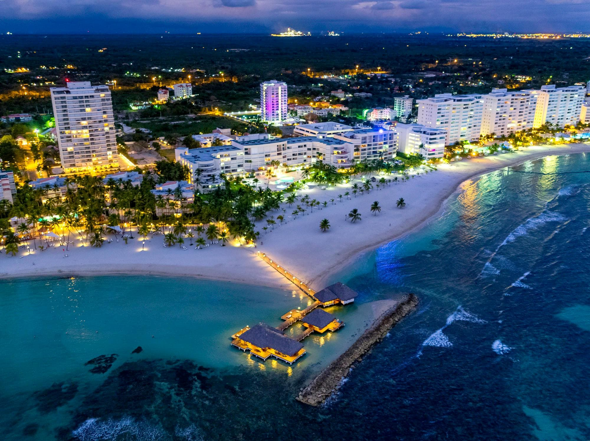

ЕГЗОТИЧНА ПОНУДА

КАРИПСКИ ПЛАЖИ И ПАЛМИ
Пунта Кана, Доминиканска Република
13.08 - 23.08
Откријте ја убавината на Доминиканската Република и уживајте во прекрасните карипски плажи, белиот песок, палмите и тиркизното море. Очекуваат ве сончеви денови, тропска природа, прекрасни зајдисонца и опуштена карипска атмосфера. Совршена понуда за сите кои сакаат релаксација, море и незаборавна егзотична авантура.
ЕГЗОТИЧНА АВАНТУРА
Една од најпознатите карипски дестинации, препознатлива по долгите бели песочни плажи, палмите и топлото тиркизно море. Местото нуди совршена атмосфера за одмор, пливање, прошетки покрај брегот и уживање во тропскиот амбиент.
Тропски остров со прекрасни бели песочни плажи, тиркизни води и недопрена природна убавина. Излетот со брод нуди можност за пливање, сончање и уживање во природниот базен во морето, како и незаборавни погледи кон карипскиот пејзаж.
Незаборавна пловидба со катамаран по топлите води на Карипското Море, со можност за пливање и сноркелинг. Ќе имаме време за релаксација, уживање во морските пејзажи и прекрасната атмосфера на карипското крајбрежје.
Исклучителен природен парк познат по своите импресивни варовнички пештери и подземни езера со кристално чиста вода. Прошетката низ пештерите овозможува откривање на еден од најинтересните природни феномени во Доминиканската Република, со прекрасни можности за фотографирање.
Состанок со групата на аеродром во Скопје, 2 часа пред летот. Следува директен лет до Истамбул па диретен лет до Пунта Кана и пристигнување на аеродромот во Пунта Кана. По завршувањето на аеродромските процедури следува организиран трансфер до хотелот и сместување. По сместувањето следува време за одмор и освежување. Попладнето е предвидено за прва прошетка низ околината и запознавање со местото. Вечерта е слободна за вечера и индивидуални активности. Ноќевање во хотел.
Појадок во хотелот и организирано разгледување на Пунта Кана. Следува прошетка низ туристичките и крајбрежните делови на местото. Потоа е предвидено слободно време за плажа, пливање, ручек и фотографирање. Во попладневните часови следува време за индивидуални активности и уживање во тропската атмосфера. Вечерта е слободна за вечера и одмор. Ноќевање во хотел.
Појадок и организирано тргнување кон местото од каде започнува излетот. Следува целодневна тура со брод до островот Саона. Предвидено е време за пливање, сончање и уживање на прекрасните тропски плажи. Во текот на турата е предвидена посета на природен базен во морето и можност за фотографирање. По завршувањето на излетот следува враќање во Пунта Кана. Вечерта е слободна за одмор и индивидуални активности. Ноќевање во хотел.
Појадок во хотелот, по што следува ден посветен на одмор покрај Карипското Море. Патниците ќе имаат слободно време за пливање, сончање, прошетка покрај брегот и фотографирање. Во текот на денот е предвидена пауза за ручек и освежување. Попладнето продолжува со релаксација и индивидуални активности на плажа. Вечерта е слободна за прошетка, вечера и одмор. Ноќевање во хотел.
Појадок и организирано тргнување кон природниот парк Los Tres Ojos. Следува посета на познатите варовнички пештери и подземни езера со кристално чиста вода. Потоа е предвидено слободно време за прошетка, фотографирање и запознавање со природата. Во попладневните часови следува враќање кон Пунта Кана. Вечерта е слободна за индивидуални активности и одмор. Ноќевање во хотел.
Појадок во хотелот и организирано тргнување кон пристаништето. Следува излет со катамаран по Карипското Море со можност за пливање и сноркелинг. Во текот на турата патниците ќе имаат време за релаксација, фотографирање и уживање во морските пејзажи. По завршувањето на излетот следува враќање во хотелот. Вечерта е слободна за прошетка, вечера и одмор. Ноќевање во хотел.
Појадок во хотелот и слободно време за избор на дополнителни активности. Можно е организирање на авантуристичка тура со возење низ тропската природа, зип-лајн или посета на локална плантажа. Денот е наменет за активен одмор и запознавање со природата надвор од туристичките комплекси. Попладнето следува слободно време за одмор и уживање во хотелот. Вечерта е слободна за индивидуални активности. Ноќевање во хотел.
Појадок во хотелот и слободен ден за одмор и индивидуални активности. Поголемиот дел од денот е предвиден за уживање на плажа, пливање и сончање. Патниците ќе имаат време за ручек, прошетка, шопинг и фотографирање. Попладнето продолжува со релаксација покрај морето. Вечерта е слободна за вечера и уживање во последната вечер на Карибите. Ноќевање во хотел.
Појадок во хотелот и слободен ден за индивидуални активности. Патниците можат да го искористат денот за одмор, плажа, пливање, шопинг или дополнителни активности по сопствен избор. Во попладневните часови е предвидено време за последна прошетка и фотографирање. Вечерта е слободна за вечера, пакување и одмор. Ноќевање во хотел.
Појадок во хотелот и одјавување согласно предвиденото време. По собирањето на багажот следува организиран трансфер до аеродромот во Пунта Кана. По пристигнувањето следува пријавување за летот и завршување на потребните аеродромски процедури. Потоа следува диретен лет до Истамбул , па директен лет до Скопје. По пристигнувањето и преземањето на багажот завршува организираното патување.